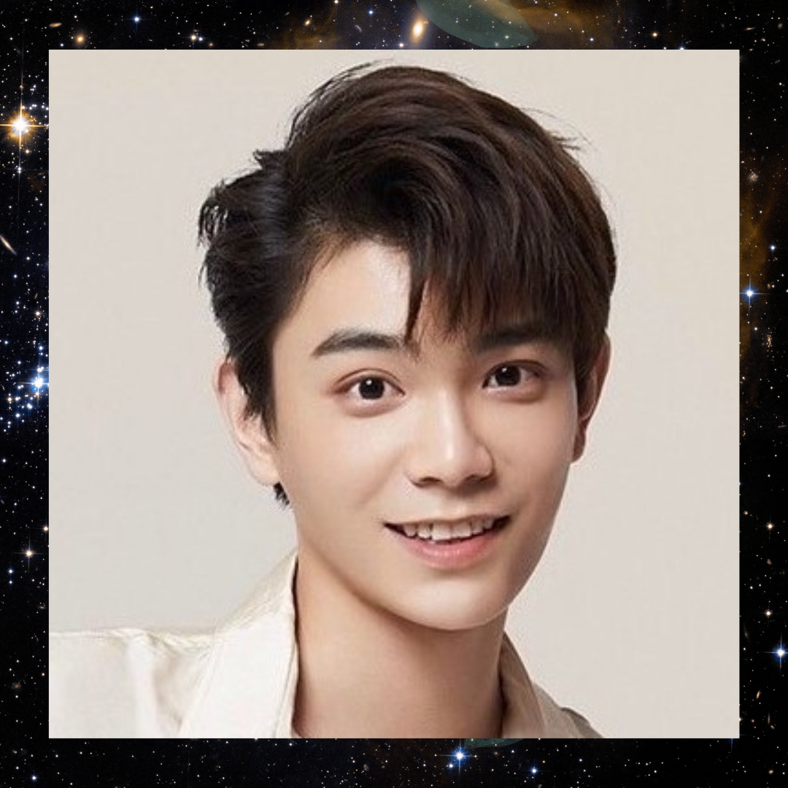
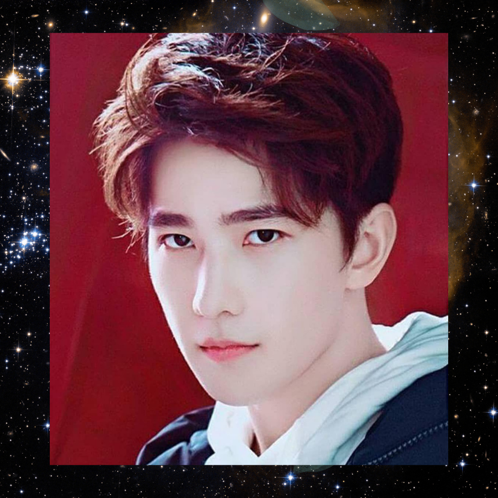
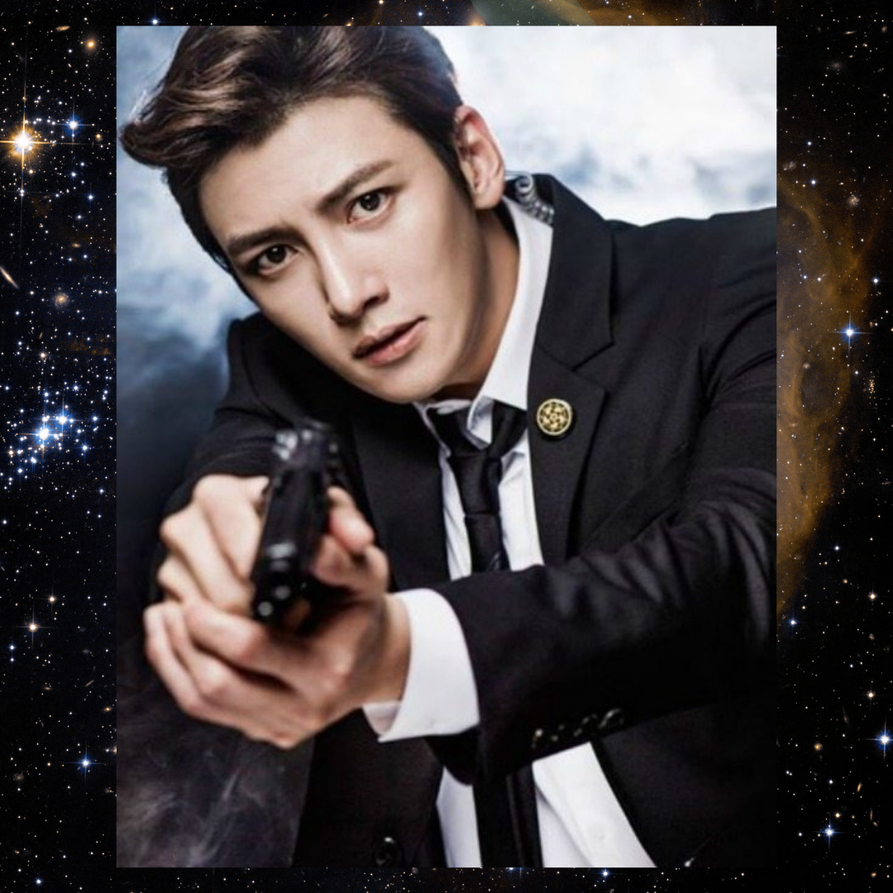
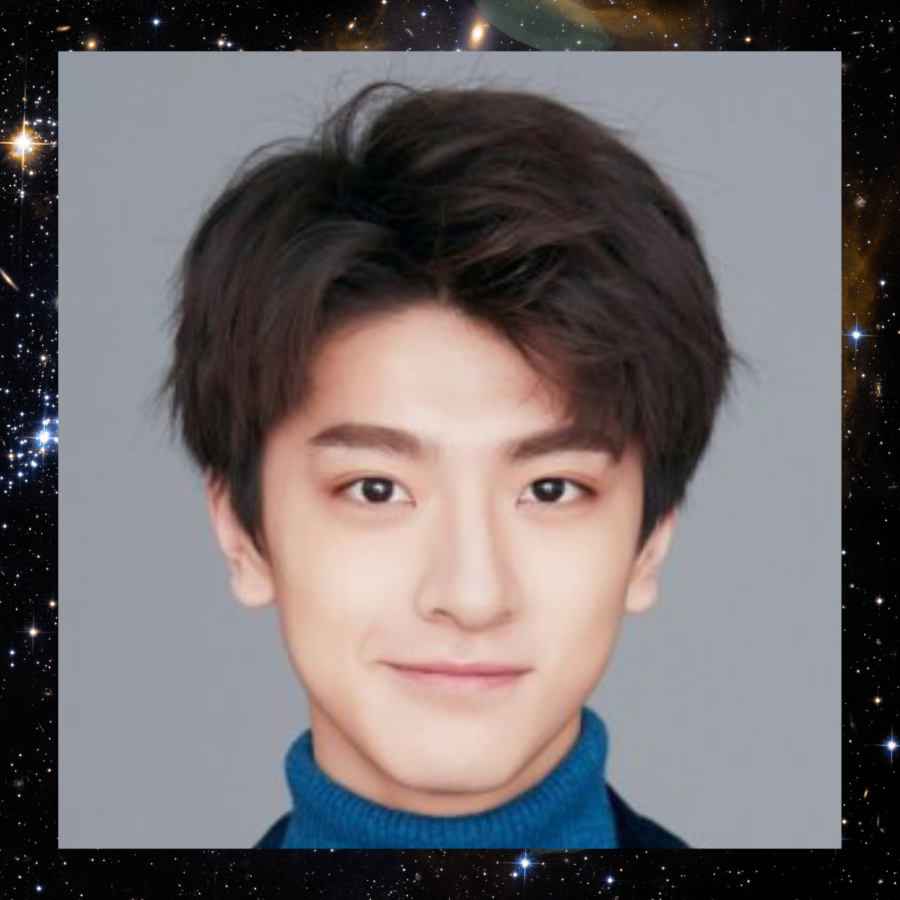
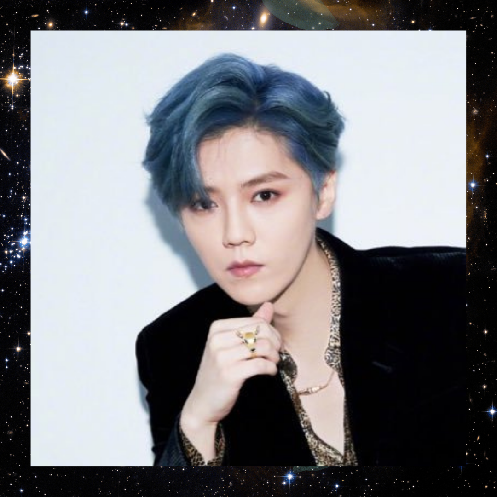
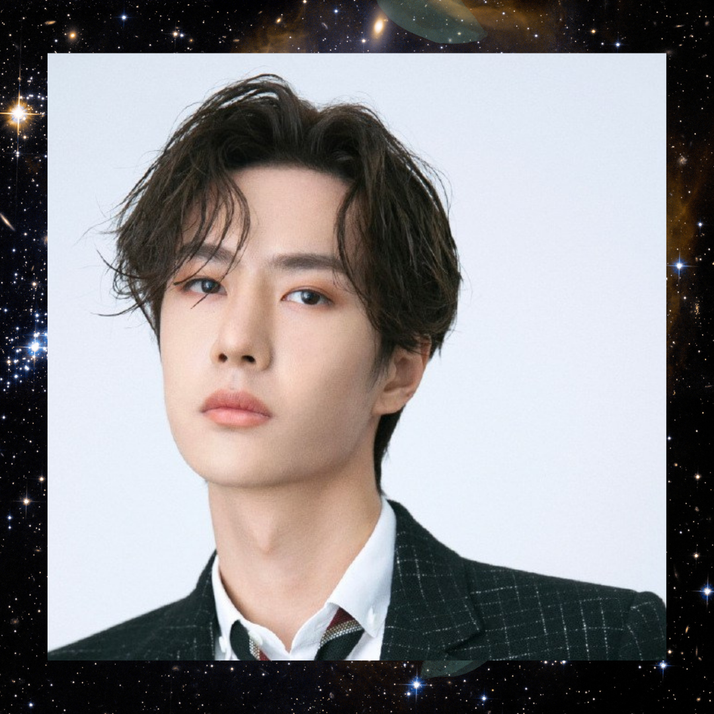
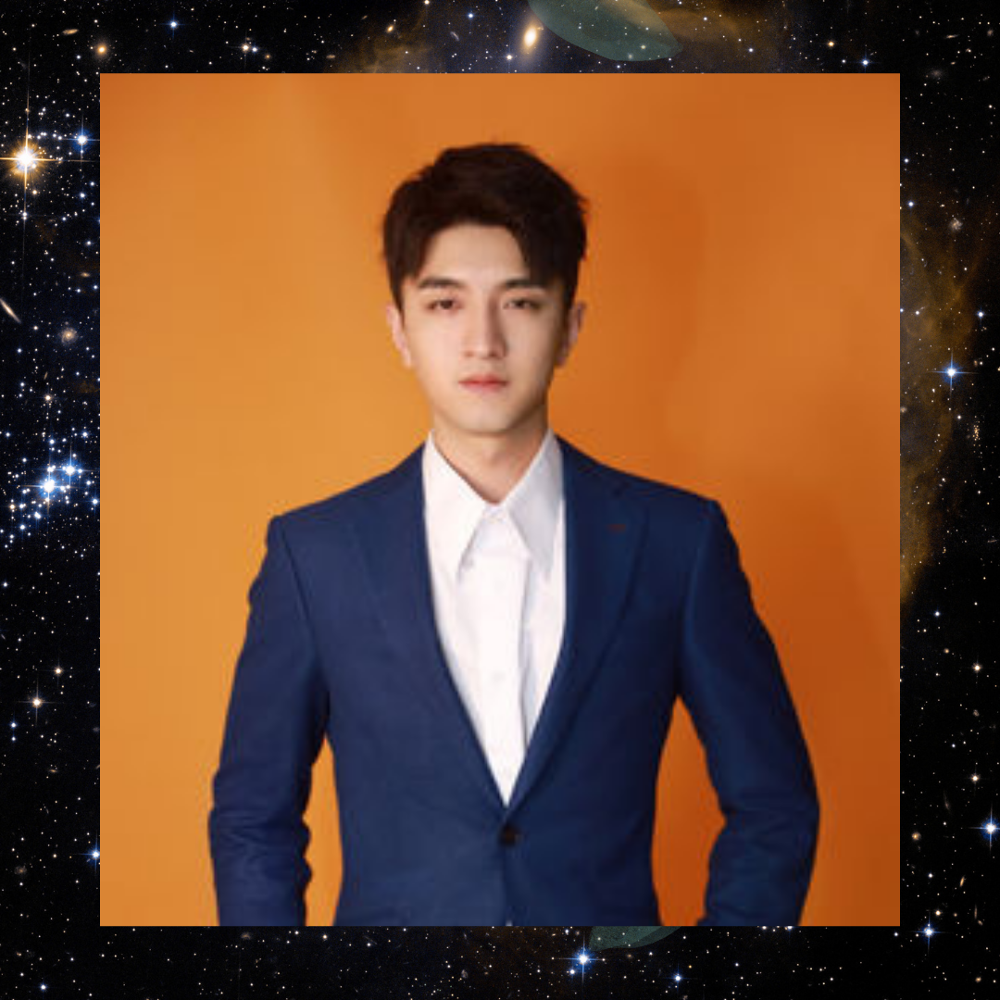

|  |
- His name is Ding Yuxi.
- He was born on 20 July 1995.
- He is a Chinese actor.
- He is known for playing Han Shuo in The Romance of Tiger and Rose.
|
|  |
- His name is Yang Yang.
- He was born on 9September 1991.
- He is a Chinse actor.
- He made his acting debut in the Chinese television drama The Dream of Red Mansions.
|
|  |
- His name is Ji Chang Wook.
- He was born on 5 July 1987.
- He is a South Korean actor and singer.
- He rose to fame for playing the lead roles in television series such as warrior Baek Dong-Soo, Empress Ki, Healer and othes.
|
|  |
- His name is Lin Yi.
- He was born on 11 January 1999.
- He is a Chinese actor and model.
- He gained popularity after starring in the 2019 romantic web drama Put Your Head on My Shoulder which brought him wider recognition.
|
|  |
- His name is Lu Han.
- He was born on 20 April 1990.
- He is a Chinese actor and singer.
- He was a member of the South Korean-Chinese boy group Exo and its sub-group Exo-M, before leaving the group in October 2014.
|
|
- His name is Song Weilong.
- He was born on 25 March 1999.
- He is a Chinese actor and model.
- He is best known for his roles as Yuan Song in Find Yourself and as Ling Xiao in Go Ahead.
|
|  |
- His name is Wang Yibo.
- He was born on 5 August 1997.
- He is a Chinese actor, singer, dancer, rapper, host and a professional motorcycle racer.
- He received international recognition for his role as Lan Wangji in the drama The Untamed.
|
|  |
- His name is Jin Han.
- He was born on 7 June 1993.
- He is a Chinese actor, singer and model.
- He made his acting debut in the 2016 film "Goodbye Mermaid".
|